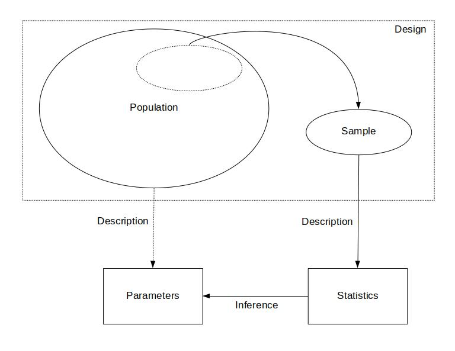

Monday, Aug 23
You can also download a PDF copy of this lecture.
The “Anatomy” of (Typical) Data
What do data look like?
Example: The following are fictional data consisting of 20 observations of the Hobbits attending a party at the Prancing Pony Inn in the town of Bree.
| Observation | Name | Farthing | Height |
|---|---|---|---|
| 1 | Arbogastes Goodwort | East | 104 cm |
| 2 | Britius Thornburrow | East | 95 cm |
| 3 | Hamfast Fleetfoot | East | 96 cm |
| 4 | Polo Chubb-Baggins | South | 93 cm |
| 5 | Berengar Longbottom | East | 86 cm |
| 6 | Meginhard Galpsi | South | 109 cm |
| 7 | Fulrad Boffin | South | 96 cm |
| 8 | Fortinbras Boffin | South | 72 cm |
| 9 | Sigefroy Roper | East | 99 cm |
| 10 | Dado Zaragamba | North | 87 cm |
| 11 | Ingunde Proudfoot | West | 81 cm |
| 12 | Taryn Zaragamba | South | 89 cm |
| 13 | Vuldretrada Mugwort | South | 81 cm |
| 14 | Bailey Hedgehopper | North | 84 cm |
| 15 | Rose Smallburrow | South | 85 cm |
| 16 | Merofled North-took | East | 75 cm |
| 17 | Duenna Undertree | West | 100 cm |
| 18 | Asphodel Swiftfoot | North | 93 cm |
| 19 | Daisy Townsend | East | 80 cm |
| 20 | Madeline Underfoot | East | 104 cm |
| Obs | Cross | Self | Difference |
|---|---|---|---|
| 1 | 23.500 | 17.375 | 6.125 |
| 2 | 12.000 | 20.375 | -8.375 |
| 3 | 21.000 | 20.000 | 1.000 |
| 4 | 22.000 | 20.000 | 2.000 |
| 5 | 19.125 | 18.375 | 0.750 |
| 6 | 21.500 | 18.625 | 2.875 |
| 7 | 22.125 | 18.625 | 3.500 |
| 8 | 20.375 | 15.250 | 5.125 |
| 9 | 18.250 | 16.500 | 1.750 |
| 10 | 21.625 | 18.000 | 3.625 |
| 11 | 23.250 | 16.250 | 7.000 |
| 12 | 21.000 | 18.000 | 3.000 |
| 13 | 22.125 | 12.750 | 9.375 |
| 14 | 23.000 | 15.500 | 7.500 |
| 15 | 12.000 | 18.000 | -6.000 |
The fundamental unit of data is the observation (one row of the table of data shown above). An observation will include the values of one or more variables.
Variables are characteristics of the observation. One basic distinction is between quantitative (i.e., numerical) and categorical variables (i.e., qualitative).
Samples and Populations
An important issue in statistics is that we often do not observe all possible observations.
A sample is the set of observed observations.
A population is the set of all possible observations — both observed and unobserved. A population can be real and finite (e.g., most surveys), or hypothetical and infinite (e.g., laboratory studies).
Note: Sometimes the sample and population are defined in terms of the objects (e.g., Hobbits, seedling pairs) on which the observations are made. This is particularly true in surveys. But for greater generality we will define them in terms of observations.
Example: The observations in black below are the observed observations (i.e., the sample). The observations in grey below are the unobserved observations. We might define all 20 observations as the population.| Observation | Name | Farthing | Height |
|---|---|---|---|
| 1 | Arbogastes Goodwort | East | 104 cm |
| 2 | Britius Thornburrow | East | 95 cm |
| 3 | Hamfast Fleetfoot | East | 96 cm |
| 4 | Polo Chubb-Baggins | South | 93 cm |
| 5 | Berengar Longbottom | East | 86 cm |
| 6 | Meginhard Galpsi | South | 109 cm |
| 7 | Fulrad Boffin | South | 96 cm |
| 8 | Fortinbras Boffin | South | 72 cm |
| 9 | Sigefroy Roper | East | 99 cm |
| 10 | Dado Zaragamba | North | 87 cm |
| 11 | Ingunde Proudfoot | West | 81 cm |
| 12 | Taryn Zaragamba | South | 89 cm |
| 13 | Vuldretrada Mugwort | South | 81 cm |
| 14 | Bailey Hedgehopper | North | 84 cm |
| 15 | Rose Smallburrow | South | 85 cm |
| 16 | Merofled North-took | East | 75 cm |
| 17 | Duenna Undertree | West | 100 cm |
| 18 | Asphodel Swiftfoot | North | 93 cm |
| 19 | Daisy Townsend | East | 80 cm |
| 20 | Madeline Underfoot | East | 104 cm |
The population includes \(N\) = 20 observations. The sample (also shown below) contains \(n\) = 5 observations. The symbols \(N\) and \(n\) are called the size of the population and sample, respectively (i.e., the number of observations in the population or sample).
| Observation | Name | Farthing | Height |
|---|---|---|---|
| 1 | Ingunde Proudfoot | West | 81 cm |
| 2 | Taryn Zaragamba | South | 89 cm |
| 3 | Bailey Hedgehopper | North | 84 cm |
| 4 | Merofled North-took | East | 75 cm |
| 5 | Duenna Undertree | West | 100 cm |
Example: Consider a rectangular-shaped piece of land that has been divided into 100 smaller rectangular units, each containing something of interest (e.g., trees, burrows, archaeological artifacts). A subset of 10 of those smaller units was selected and the number of objects in each of these units was counted.  Here we have a population size of \(N\) = 100 and a sample size of \(n\) = 10.
Here we have a population size of \(N\) = 100 and a sample size of \(n\) = 10.
| Obs | Cross | Self | Diff |
|---|---|---|---|
| 1 | 23.500 | 17.375 | 6.125 |
| 2 | 12.000 | 20.375 | -8.375 |
| 3 | 21.000 | 20.000 | 1.000 |
| 4 | 22.000 | 20.000 | 2.000 |
| 5 | 19.125 | 18.375 | 0.750 |
| 6 | 21.500 | 18.625 | 2.875 |
| 7 | 22.125 | 18.625 | 3.500 |
| 8 | 20.375 | 15.250 | 5.125 |
| 9 | 18.250 | 16.500 | 1.750 |
| 10 | 21.625 | 18.000 | 3.625 |
| 11 | 23.250 | 16.250 | 7.000 |
| 12 | 21.000 | 18.000 | 3.000 |
| 13 | 22.125 | 12.750 | 9.375 |
| 14 | 23.000 | 15.500 | 7.500 |
| 15 | 12.000 | 18.000 | -6.000 |
| 16 | 18.125 | 18.250 | -0.125 |
| 17 | 19.625 | 18.875 | 0.750 |
| 18 | 26.250 | 18.500 | 7.750 |
| \(\vdots\) | \(\vdots\) | \(\vdots\) | \(\vdots\) |
Note that here the sample size is \(n\) = 15, but the population size is effectively infinite (i.e., \(N\) = \(\infty\)).
Statistics and Parameters
A statistic is a description of the observations in a sample, or a description of the distribution of observations in a sample.
A parameter is a description of the observations in a population, or a description of the distribution of observations in a population.
Note: More formally, a statistic is anything that is a function of the (distribution of) observations in a sample, and a parameter is a function of the (distribution of) observations in a population.
Note: We will consider what is meant by a “distribution” in the next lecture.
Descriptive and Inferential Statistics
Descriptive statistics concerns describing the observations in a sample using statistics, or a population using parameters.
Inferential statistics (or statistical inference) concerns using a sample (usually a statistic) to make conclusions about a population (usually a parameter).
The “Big Picture”
The “big picture” illustrates the roles of population versus sample, design, parameter versus statistic, and description versus inference. The design of a study is the process of how we obtain a sample — i.e., how we collect data (more on that later).

Darwin, C. (1876). The Effect of Cross- and Self-fertilization in the Vegetable Kingdom, 2nd Ed. London: John Murray.↩︎